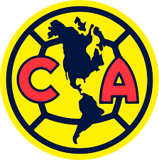

1-America
El Club de Fútbol América S. A. de C. V. es un equipo de fútbol profesional de la Primera División de México. Fue fundado el 12 de octubre de 1916 en la Ciudad de México por un grupo de estudiantes encabezados por el jugador Rafael Garza Gutiérrez y el profesor y entrenador Eugenio Cenoz.
2-Guadalajara (Chivas)
El Club Deportivo Guadalajara, S. A. de C. V.,conocido simplemente como Guadalajara y coloquialmente como Chivas, es un club de fútbol profesional mexicano con sede en Guadalajara, Jalisco. Fue fundado oficialmente el 8 de mayo de 1906 por el comerciante y agente de ventas belga Edgar Everaert con el nombre de Unión Football Club, mismo año en el que comenzó su actividad futbolística.

3-Cruz Azul
El Club de Fútbol Cruz Azul,mejor conocido como Cruz Azul, es un club profesional de la Primera División del fútbol mexicano, con sede en la Ciudad de México. Junto con América, Guadalajara y Universidad Nacional, es uno de los llamados «cuatro grandes del fútbol mexicano».

4-Pumas UNAM
El Club Universidad Nacional, A.C. conocido popularmente como los Pumas de la UNAM, es un equipo de fútbol profesional de la Primera División de México, fundado el 2 de agosto de 1954.

5-toluca
El Deportivo Toluca Fútbol Club S.A. de C.V.,también conocido como Club Deportivo Toluca, es un equipo de fútbol profesional que actualmente participa en la Primera División de México. Fue fundado oficialmente el 12 de febrero de 1917 por un patronato encabezado por los hermanos Manuel y Francisco Henkel Bross, y Román Ferrat Alday. Su sede se encuentra ubicada en la ciudad de Toluca, Estado de México, jugando sus partidos como local en el Estadio Nemesio Díez, también conocido como «La Bombonera».

6-Pachuca
El Club de Fútbol Pachuca es un club de fútbol con sede en la ciudad de Pachuca, Hidalgo, México. Fundado el 1 de noviembre de 1892, es el equipo de fútbol profesional más antiguo de México. Actualmente participa en la Primera División de México en la cual permanece desde 1998, disputando sus encuentros de local en el Estadio Hidalgo. Es el equipo con más escuelas de fútbol en México.
7-Tigres
El Club Tigres de la Universidad Autónoma de Nuevo León, o simplemente Tigres de la UANL, es un equipo de fútbol con sede en San Nicolás de los Garza, Nuevo León, que compite en la Primera División de México, la máxima competición de fútbol profesional de México.Fundado el 7 de marzo de 1960, es el equipo oficial de la Universidad Autónoma de Nuevo León y cuenta con el respaldo y manejo administrativo de Sinergia Deportiva (empresa filial de CEMEX) desde 1997. Disputa sus partidos como local en el Estadio Universitario.
8-Monterrey
El Club de Fútbol Monterrey,coloquialmente conocido como «Rayados» o simplemente «Monterrey», abreviado como «C. F. Monterrey»— es un club de fútbol con sede en Monterrey, México. Fue fundado el 28 de junio de 1945 y disputa sus encuentros como local en el Estadio BBVA, con capacidad para 53 500 espectadores, está ubicado en Guadalupe, en la zona metropolitana de Monterrey.
9-Atlas
El Atlas Fútbol Club es un equipo de fútbol de la Primera División de México, originario de la ciudad de Guadalajara, Jalisco. Fundado el 15 de agosto de 1916, el equipo recibe su nombre en honor al titán de la mitología griega Atlas, ya que según comentó uno de los fundadores, Juan José "Lico" Cortina, «nos sentíamos el sostén del mundo».
10-Leon
El Club León es un club de fútbol profesional de México de la ciudad de León, ubicada en la región del Bajío mexicano, específicamente en el estado de Guanajuato. Juega en la primera división de México, en la cual ocupa la octava posición en su clasificación histórica.
11-Necaxa
Impulsora del Deportivo Necaxa S.A. de C.V., o simplemente Club Necaxa, es un equipo de fútbol profesional de la Primera División de México. Fue fundado el 21 de agosto de 1923 en la Ciudad de México por el ingeniero de origen escocés William H. Frasser. En el año 2003, cambió de sede a la ciudad de Aguascalientes, en el estado homónimo, disputando sus partidos como local en el Estadio Victoria; y los colores tradicionales del uniforme necaxista son el rojo y el blanco.

12-Santos Laguna
El Club Santos Laguna S.A. de C.V.,más conocido como Santos Laguna o simplemente Santos, es un club de fútbol profesional con sede en Torreón, Coahuila, México. Fue registrado oficialmente el 4 de septiembre de 1983 por el Instituto Mexicano del Seguro Social del Estado de Durango bajo el nombre de «Club Santos IMSS». Su propiedad recae en la sociedad anónima, Orlegi Deportes.
13-Tijuana
El Club Tijuana Xoloitzcuintles de Caliente, conocido como Club Tijuana, Xolos de Tijuana o simplemente Xolos es un club profesional de fútbol mexicano. Fue fundado en el año 2007 por Jorge Hank Rhon y juega en la ciudad de Tijuana, Baja California, México. Es el primer equipo de fútbol de Tijuana en alcanzar la Primera División.

14-Puebla
El Club Puebla, antes llamado Puebla Fútbol Club,es un equipo de fútbol de México que participa en la Primera División Mexicana. Fue oficialmente fundado el 7 de mayo de 1944 y tiene su sede en el Estadio Cuauhtémoc de la ciudad de Puebla.

15-Queretaro
El Querétaro Fútbol Club, popularmente conocido como los Gallos Blancos de Querétaro, es un club de fútbol profesional de México con sede en Santiago de Querétaro, Querétaro. Fue fundado el 8 de julio de 1950 y milita en la primera división de México.

16-Juarez
El Fútbol Club Juárez,también conocido como Bravos de Juárez o Los Bravos, es un club de fútbol profesional de la Primera División de México con sede en Ciudad Juárez, Chihuahua, México. Fue fundado el 29 de mayo de 2015, juega de local en el Estadio Olímpico Benito Juárez, que cuenta con una capacidad para 19 703 personas y se encuentra ubicado en el área de El Chamizal.
17-Mazatlan
El Mazatlán Fútbol Club es un club de fútbol de Mazatlán, Sinaloa, México. Fue fundado el 2 de junio de 2020 y actualmente participa en la Primera División de México. Tiene como sede el Estadio El Encanto. Los integrantes de esta institución ostentan el apodo de "Cañoneros".
18-Atlético San Luis
El Club Atlético de San Luis es un equipo de fútbol profesional mexicano ubicado en San Luis Potosí, San Luis Potosí, que juega en la Primera División de México. Fue fundado el 28 de mayo de 2013, y tiene como sede el Estadio Alfonso Lastras Ramírez.